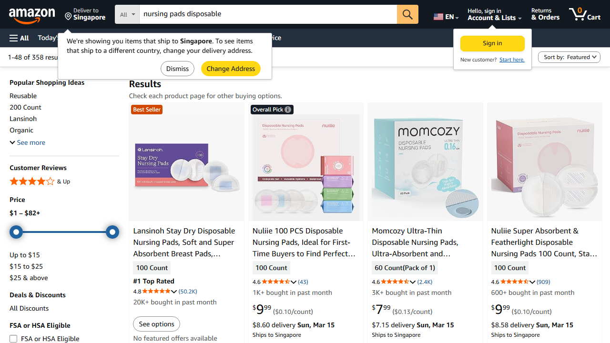
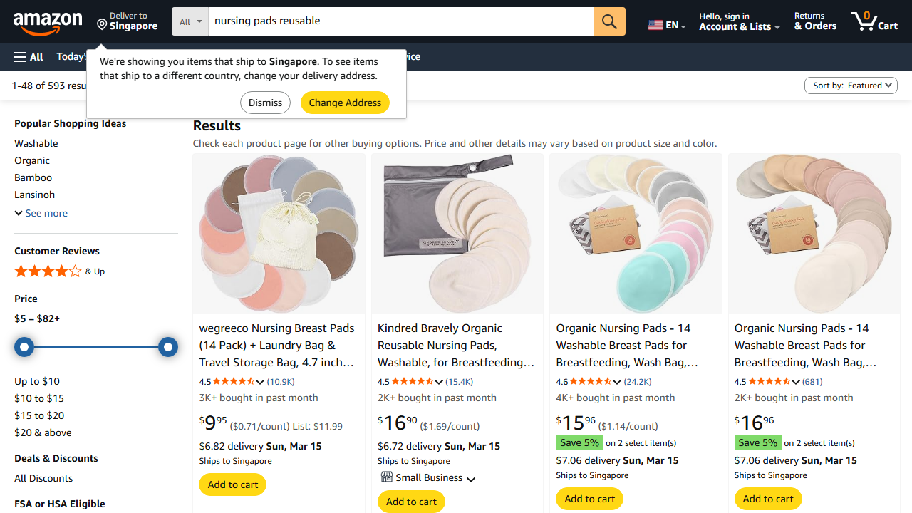
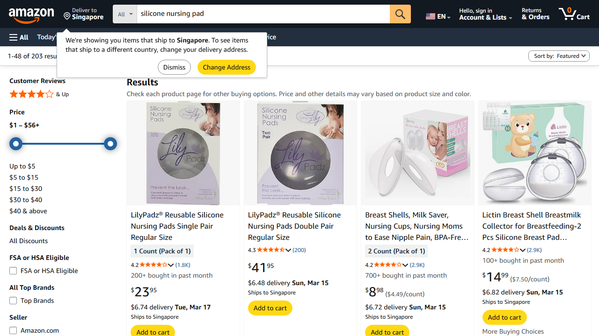
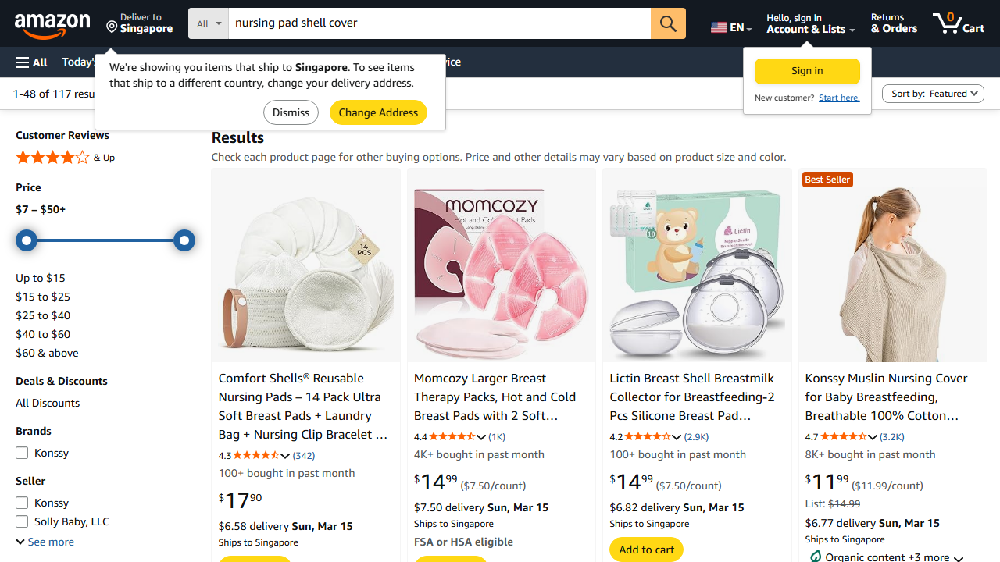

本报告深入研究了亚马逊美国站点(Amazon.com)护士表(Nursing Pads)市场，通过分析销量、规格参数、用户评分和评价内容，精准提炼用户需求。
核心发现：市场上大多数护士表采用"钢壳+内垫"的分体式设计，极少有一体式硅胶壳产品。这与用户的使用习惯、舒适度需求和实际使用场景密切相关。
护士表(Nursing Pads)是哺乳期女性用于吸收乳汁渗漏的专用产品，主要分为以下类型：




| 产品类型 | 典型价格 | 主要特点 | 市场份额 |
|---|---|---|---|
| 一次性护士表 | $8-15/60-100片 | 方便、卫生、无需清洗 | 约40% |
| 可重复使用护士表 | $15-30/6-12片 | 经济、环保、可机洗 | 约35% |
| 钢壳式护士表 | $20-40/4-8对 | 形状保持好、可更换内垫 | 约20% |
| 硅胶一体式护士表 | $15-25/4-6片 | 柔软贴合、隐蔽性强 | 约5% |
Q: 为什么亚马逊上大多数护士表是钢壳(shell)设计，而不是一体式硅胶(silicone)设计？
现代"钢壳"护士表已改良，通常采用：
| 评价维度 | 高频正面词 | 高频负面词 |
|---|---|---|
| 舒适度 | soft, comfortable, gentle | itchy, rough, uncomfortable |
| 吸收性 | absorbent, dry, leak-proof | leaks, saturated, thin |
| 隐蔽性 | invisible, discreet, no show | bulky, obvious, noticeable |
| 便捷性 | easy, convenient, disposable | complicated, messy, hard to clean |
| 性价比 | worth it, value, affordable | expensive, overpriced, not worth |
| 品牌 | 主推类型 | 价格区间 | 目标人群 |
|---|---|---|---|
| Lansinoh | 一次性 | $8-15 | 追求便利的职场妈妈 |
| Medela | 可重复使用 | $20-35 | 注重经济的妈妈 |
| Philips Avent | 硅胶式 | $15-25 | 追求舒适度的妈妈 |
| Bamboobies | 竹纤维可洗 | $18-28 | 环保意识强的妈妈 |
虽然当前市场份额低，但存在未被满足的需求：
报告生成时间：2026年3月10日